Clase 15 Análisis de conglomerados (clustering)
15.1 Introducción
Mediante clustering (o análisis de conglomerados) buscamos aprender agrupaciones de casos, de manera que casos dentro de un grupo (cluster, o conglomerado) estén cercanos entre ellos, mientras que puntos en distintos clusters están a distancia más grande - todo esto de acuerdo a alguna medida de distancia. Entonces podemos:
- Descubrir estructuras interesantes de agrupamiento en los datos que nos ayuden a entenderlos.
- Resumir grupos (que pueden ser grandes), por casos representativos y/o promedio. Así la tarea de entender los casos (que pueden ser miles, por ejemplo) se reduce a entender los grupos (que pueden ser decenas o cientos, por ejemplo).
- Usar grupos como insumo para otras tareas (por ejemplo, distintos modelos predictivos según cluster, distintas estrategias de tratamiento según cluster, etc.)
Generalmente el proceso de clustering involucra tres pasos:
- Selección de métrica de distancia entre puntos.
- Aplicación de un algoritmo de clustering.
- Selección de número de clusters.
Para variables numéricas, una elección usual es la distancia euclideana (cuando las variables tienen las mismas unidades, o escala similar), o la distancia euclideana para las variables estandarizadas.
Ejemplo
Consideramos las ocurrencias de temblores cerca de Fiji (The data set give the locations of 1000 seismic events of MB > 4.0. The events occurred in a cube near Fiji since 1964.)
quakes_1 <- quakes[, c('lat','long')]
quakes_1$id <- 1:nrow(quakes_1)
ggplot(quakes_1, aes(x=long, y=lat)) + geom_point()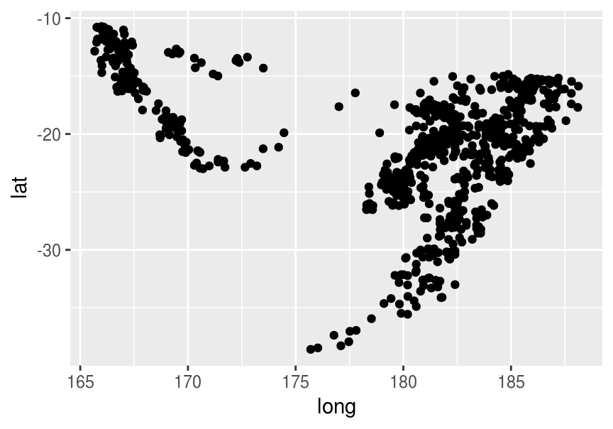
¿Podemos separar en grupos estos datos? Podemos pensar en varias maneras de hacer esto. Un enfoque simple que nos puede dar una agrupación interesante es pensar en agrupar de manera que obtengamos grupos relativamente compactos o concentrados alrededor de un valor (en estos datos, ¿qué otras cosas se te ocurren? ¿qué otros patrones interesantes sería interesante agrupar?).
15.2 Enfoques: combinatorio y basado en modelos.
Los enfoques basados en modelos (por ejemplo, modelos de mezclas) se basan en la introducción de variables latentes que explican diferencias en las distribuciones de las variables observadas.
En estas notas veremos métodos combinatorios, que trabajan directamente sobre los datos (sin modelos), intentanto segmentar en grupos a través de los cuales minimizamos alguna medida objetivo. En este contexto, el problema de segmentación/clustering se plantea como sigue:
- Suponemos que buscamos \(K\) grupos.
- Una asignación \(C\) es una función que asigna a cada observación \(x_i\) un grupo \(C(i)\in \{1,\ldots, k\}\).
- Tenemos una distancia o disimilitud \(d(x,y)\) entre puntos, y una función \(W(C_k)\) que mide qué tan disperso es el grupo \(C_k\) en términos de la distancia \(d\).
Buscamos entonces encontrar una solución \(C^*(i)\) que minimice
\[W(C) = \sum_{k=1}^K W(C_k),\]
es decir, buscamos que las distancias dentro de cada grupo (within groups) \(k\) sean lo más chicas posibles. .
Resolver este problema enumerando todas las posibles asignaciones \(C\) no es factible, pues el número de posibles asignaciones es típicamente gigantesco aún para un conjunto de datos muy chico.
La idea entonces es buscar heurísticas que den soluciones razonables a este problema de minimización.
15.3 K-medias
Este es posiblemente el algoritmo (o familia de algoritmos) más popular de segmentación, y se escala razonablemente bien a problemas relativamente grandes.
Supongamos que tenemos datos numéricos con escala o unidades similares (si no, podemos estandarizar).
En k-medias, un buen agrupamiento es uno en el que la variación dentro de los grupos es chica. En primer lugar fijamos el número \(K\) de grupos que buscamos. Supongamos entonces que \(C_1\cup\cdots\cup C_K\) es una partición de los datos, y sea \(W(C_k)\) nuestra medida de variación dentro de los clusters. Entonces buscaremos resolver
\[\min_{C_1,\ldots, C_K} \sum_{k=1}^K W(C_k)\]
Una medida usual es la siguiente:
\[W(C_k)=\sum_{i\in C_k} ||x_i-\bar{x}_k||^2,\]
donde \(\bar{x}_k=\frac{1}{|C_k|}\sum_{i\in C_k} x_i\) es el centroide del grupo \(C_k\). Esto mide qué tan compacto es un grupo considerando la suma de distancias a su centroide.
El problema que queremos resolver es entonces \[\begin{equation} \min_{C_1,\ldots, C_K} \sum_{k=1}^K \sum_{i\in C_k} ||x_i-\bar{x}_k||^2 \tag{15.1} \end{equation}\]Nótese que cada caso \(x_k\) contribuye un sumando a la función objetivo. Este problema es demasiado grande para resolver por fuerza bruta (por ejemplo, enlistando todas las posibles agrupaciones).
Podemos desarrollar una heurística considerando primero del problema ampliado \[\begin{equation} \min_{C_1,\ldots, C_K, m_1,\ldots, m_K} \sum_{k=1}^K \sum_{i\in C_k}||x_i-m_k||^2 \tag{15.2} \end{equation}\]cuya solución es la misma que el problema (15.1). La razón es que la función objetivo del (15.2) alcanza un mínimo menor o igual al de (15.1), pero dada cualquier solución \(C_1^*,C_2^*,\ldots,C_K^*\) de (15.2), tenemos que para toda \(k\), las distancias al cuadrado son mínimas al centroide de los datos: \[\sum_{i \in C_k} ||x_i - \bar{x}_k||^2 \leq \sum_{i \in C_k} ||x_i - m_k||^2 \] por lo que \(C_1^*,C_2^*,\ldots,C_K^*\) también es solución de (15.1).
Ahora desarrollamos la heurística de k-medias. Comenzando con el problema ampliado, notamos que si fijamos puntos centrales iniciales \[m_1,\ldots, m_K\] podemos minimizar (con centros fijos) \[\min_{C_1,\ldots, C_K} \sum_{k=1}^K \sum_{i\in C_k}||x_i-m_k||^2 \] asignando cada \(x_i\) al cluster \(C_k\) con la \(m_k\) asociada más cercana a \(x_i\).
Una vez que tenemos clusters dados, podemos ahora minimizar (con clusters fijos)
\[\min_{m_1,\ldots, m_K} \sum_{k=1}^K \sum_{i\in C_k}||x_i-m_k||^2 \]
cuya solución es
\[m_k = \bar{x}_k = \frac{1}{n_k}\sum_{i\in C_k} x_i,\]
Ahora podemos iterar: agrupar en clusters, encontrar centroide, etc.
Esto sugiere el siguiente algoritmo:
Algoritmo de k-medias
K-means Sea \(k\) el número de grupos que buscamos. Escogemos \(k\) puntos en los datos de entrenamiento al azar.
En el paso \(s=1,2,\ldots\):
Dadas los centros \(m_k\) (que pensamos fijas), encontramos una nueva asignación \(C_k\) a clusters que minimice \[ 2\sum_{k=1}^K \sum_{i\in C_k} ||x_i - m_k||^2,\] y esto se hace asignando cada observación al centro \(m_k\) que esté más cercano.
(cálculo de centroides) Dada una asignación a clusters, encontramos nuevos centros promediando en cada cluster : \[m_k = \frac{1}{|C_k|}\sum_{i\in C_k} x_i.\]
Observaciones:
- Este algoritmo converge (cada paso reduce la función de costo), pero no tiene garantía de obtener un mínimo global.
- Conviene correr varias veces, para distintos arranques aleatorios, y escoger la solución con función objetivo más chica. Cuando no es posible correrlo múltiples veces, puede ser que la solución obtenida esté muy lejos de una óptima.
- Hay distintas maneras de implementar este algoritmo, algunas más eficientes que otras.
Ejemplo
Describiremos iteraciones para \(k=5\) para el conjunto de datos, con una implementación simple:
quakes_1 <- quakes[, c('lat','long')]
quakes_1$id <- 1:nrow(quakes_1)
ggplot(quakes_1, aes(x=long, y=lat)) + geom_point()
Seleccionamos muestra de datos al azar (centroides)
set.seed(2512)
K <- 5
centros <- sample_n(quakes_1, K) %>% mutate(k = 1:K) %>% select(-id)
centros## lat long k
## 1 -18 181 1
## 2 -20 181 2
## 3 -24 180 3
## 4 -23 185 4
## 5 -14 172 5ggplot(quakes_1, aes(x=long, y=lat)) + geom_point() +
geom_point(data = centros, aes(x=long, y=lat), size=7, colour='red')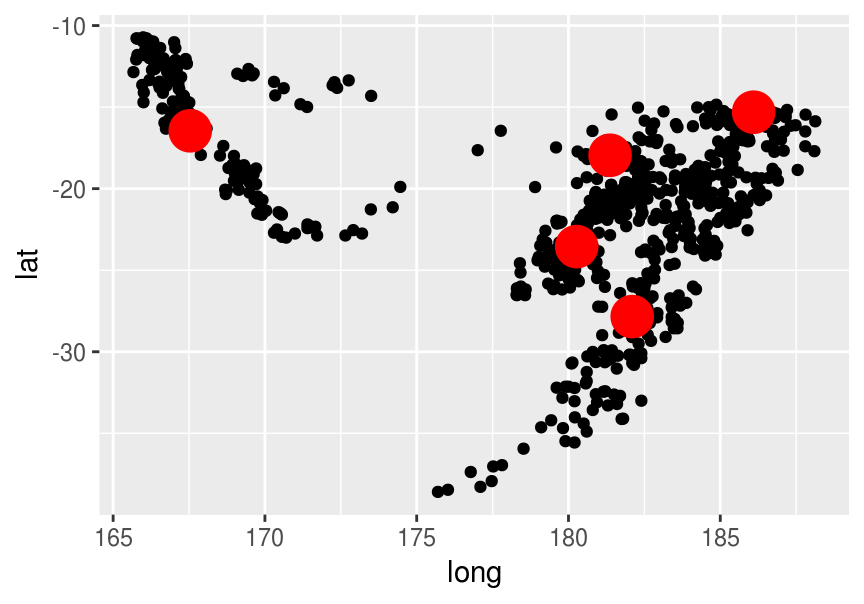
Agrupamos:
agrupar <- function(datos, centros){
datos_larga <- datos %>% gather(variable, valor, -id)
centros_larga <- centros %>% gather(variable, valor_m, -k)
dat <- full_join(datos_larga, centros_larga) %>%
mutate(dif_cuad = (valor-valor_m)^2) %>%
group_by(id, k) %>%
summarise(dist_cuad = sum(dif_cuad)) %>%
group_by(id) %>%
arrange(id, k) %>%
summarise(k = which.min(dist_cuad))
dat <- dat %>% left_join(datos)
dat
}
agrup <- agrupar(quakes_1, centros)## Joining, by = "variable"## Joining, by = "id"ggplot(agrup, aes(x=long, y=lat, colour=factor(k))) + geom_point()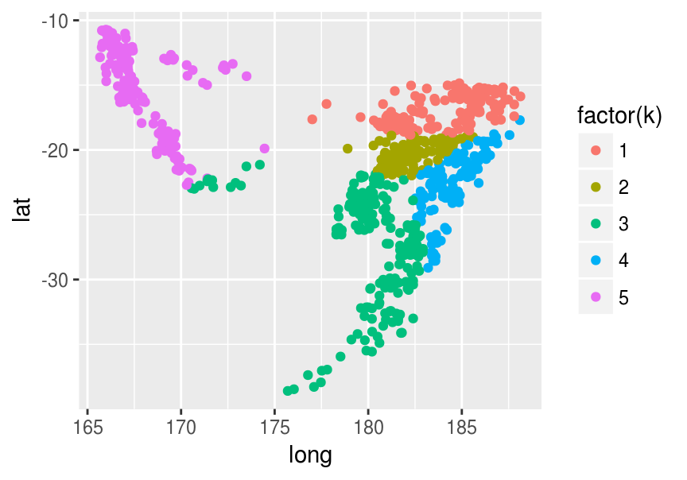
Recalculamos centros:
recalcular_centros <- function(datos_agrup){
datos_agrup %>% gather(variable, valor, -id, -k) %>%
group_by(k, variable) %>%
summarise(valor = mean(valor)) %>%
spread(variable, valor)
}
centros <- recalcular_centros(agrup)
ggplot(quakes_1, aes(x=long, y=lat)) + geom_point() +
geom_point(data = centros, aes(x=long, y=lat), size=7, colour='red')Y ahora calculamos distancia dentro de clusters:
wss <- function(agrupacion, centros){
wss <- agrupacion %>% group_by(k) %>%
gather(variable, valor,-id, -k) %>%
left_join(centros %>% gather(variable, centro, -k)) %>%
group_by(k) %>%
summarise(dist_2 = sum((valor - centro)^2))
sum(wss$dist_2)
}
wss(agrup, centros)## Joining, by = c("k", "variable")## [1] 11022Agrupamos:
agrup <- agrupar(quakes_1, centros) ## Joining, by = "variable"## Joining, by = "id"ggplot(agrup, aes(x=long, y=lat, colour=factor(k))) + geom_point()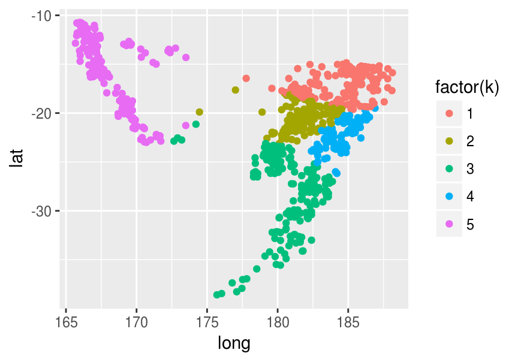
Recalculamos centros:
centros <- recalcular_centros(agrup)
wss(agrup, centros)## Joining, by = c("k", "variable")## [1] 9657ggplot(quakes_1, aes(x=long, y=lat)) + geom_point() +
geom_point(data = centros, aes(x=long, y=lat), size=7, colour='red')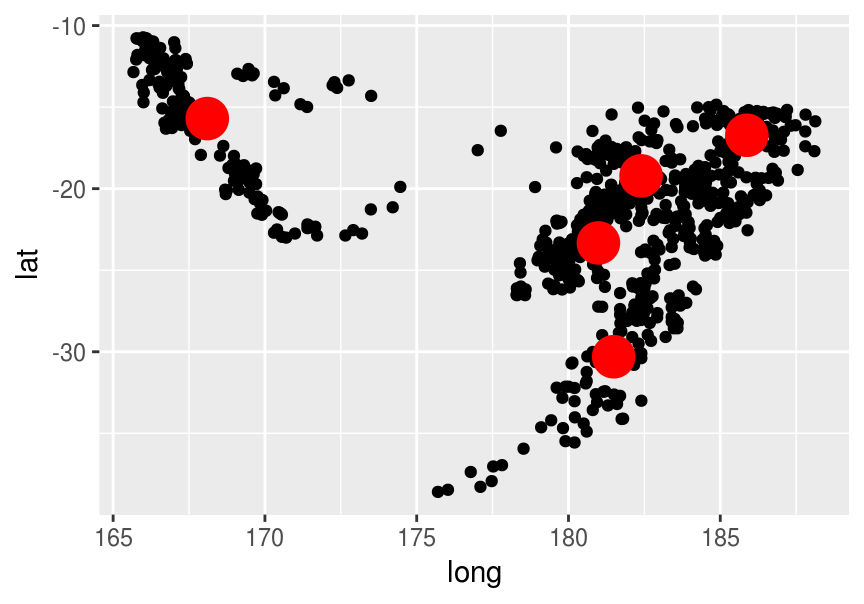
Una iteración más da
agrup <- agrupar(quakes_1, centros)## Joining, by = "variable"## Joining, by = "id"centros <- recalcular_centros(agrup)
wss(agrup, centros)## Joining, by = c("k", "variable")## [1] 9115ggplot(agrup, aes(x=long, y=lat, colour=factor(k))) + geom_point()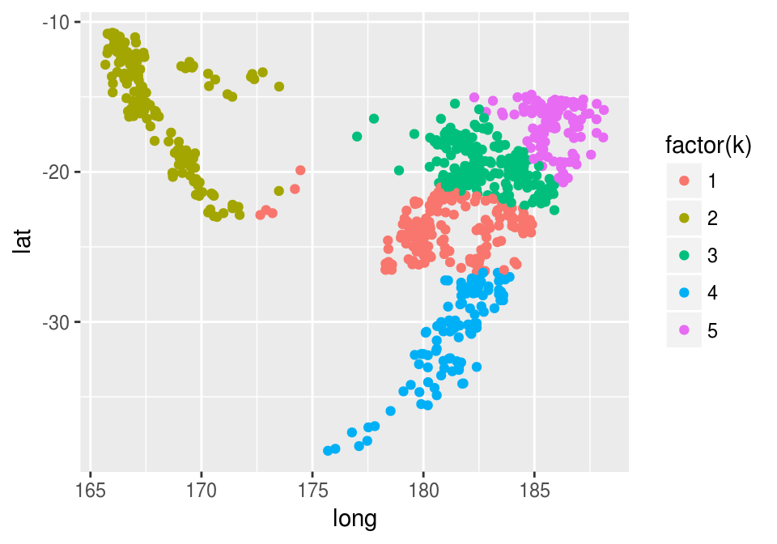
Ejercicio
Corre varias veces este ejemplo con distinta semilla. ¿Obtienes mejores o peores soluciones que la de arriba? ¿Qué tan “naturales” crees que son los grupos que obtuvimos? ¿Qué defectos potenciales le ves a este agrupamiento?
Usando la funcion k-means
La función \(k-means\) de R automáticamente produce varias corridas con distintos inicios aleatorios y selecciona la que produzca el mínimo más bajo.
set.seed(2800)
k_medias <- kmeans(quakes_1[, c('long','lat')], centers = 5, nstart=30) # escoger varios comienzos aleatorios
str(k_medias)## List of 9
## $ cluster : int [1:1000] 1 1 1 2 1 2 4 5 5 2 ...
## $ centers : num [1:5, 1:2] 181 184 170 167 181 ...
## ..- attr(*, "dimnames")=List of 2
## .. ..$ : chr [1:5] "1" "2" "3" "4" ...
## .. ..$ : chr [1:2] "long" "lat"
## $ totss : num 62065
## $ withinss : num [1:5] 1868 2465 314 682 1406
## $ tot.withinss: num 6736
## $ betweenss : num 55330
## $ size : int [1:5] 326 353 69 136 116
## $ iter : int 3
## $ ifault : int 0
## - attr(*, "class")= chr "kmeans"grupo <- k_medias$cluster
quakes_1$grupo <- grupo
ggplot(quakes_1, aes(x=long, y=lat, colour=factor(grupo))) + geom_point()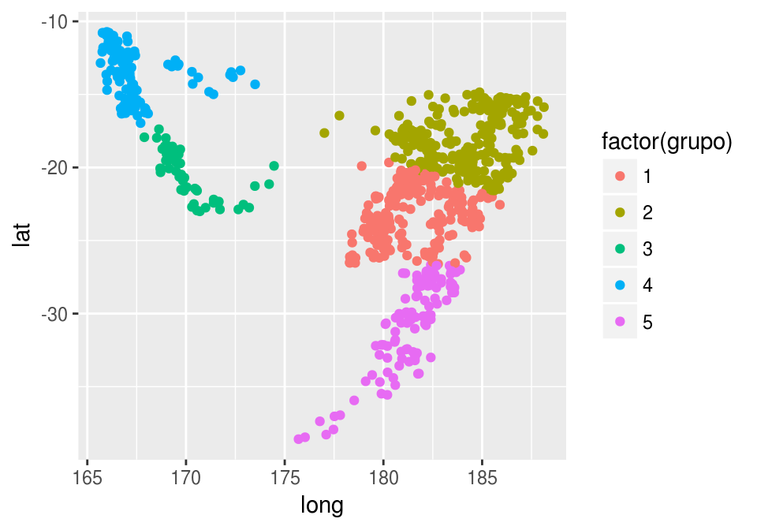
Observaciones:
- En la salida la cantidad
k_medias$tot.withinss## [1] 6736nos da el valor de (15.1) para la solución obtenida.
Observación: El algoritmo usado por defecto en R es el de Hartigan-Wong, que es más eficiente que la implementación simple que vimos arriba.
15.4 Selección de número de clusters.
Variación dentro de clusters para distintas soluciones
Podemos medir la calidad de la segmentación según el mínimo alcanzado de la función objetivo: la suma de cuadrados dentro de los clusters (withinss), que nos dice qué tan compactos son. Primero vemos un ejemplo simple con tres clusters claros:
set.seed(2800)
df <- data.frame(x=c(rnorm(100,-50,10), rnorm(100,0,10), rnorm(70,30,2) ))
qplot(df$x)## `stat_bin()` using `bins = 30`. Pick better value with `binwidth`.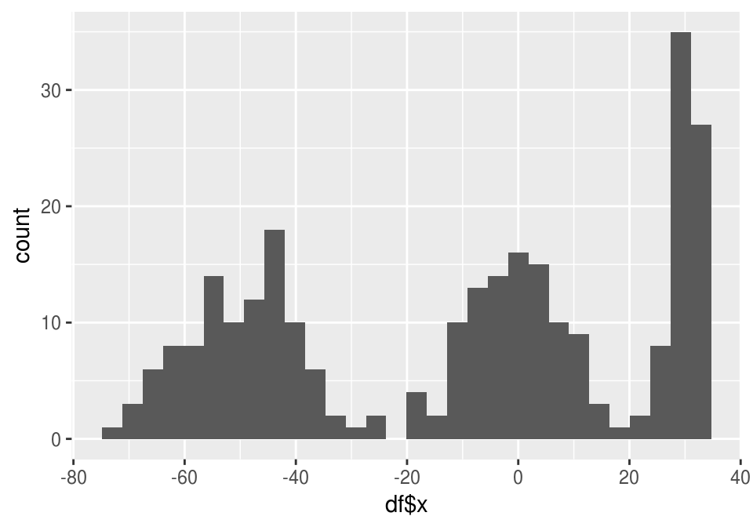
ajustes_km <- lapply(1:20, function(k){
kmedias <- kmeans(df, centers = k, nstart = 20)
kmedias
})
tot_within <- sapply(ajustes_km, function(aj){ aj$tot.withinss})
datos_codo <- data_frame(no_clusters = 1:length(tot_within),
tot_within = tot_within) %>%
mutate(sol_3 = no_clusters==3)
ggplot(datos_codo, aes(x = no_clusters, y = tot_within)) +
geom_line() +
geom_point(aes(colour = sol_3), size=3) 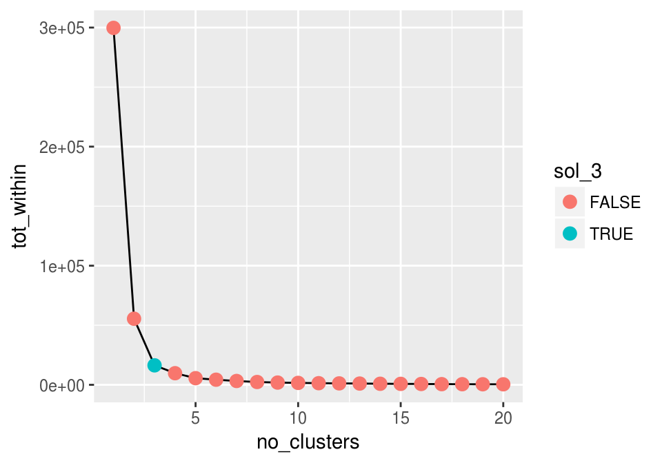
Agregar un cluster adicional hace más complejo nuestro resumen, así que incrementamos el número de clusters sólo cuando tenemos una mejora considerable en la solución. En este caso particular, un buen lugar para cortar es el codo (en 3 clusters), pues añadir un cluster más no mejora la solución considerablemente.
A veces el punto de corte no es tan claro, aunque vemos que en nuestro ejemplo de terremotos la estructura más clara es la de 2 grupos:
set.seed(2800)
df <- quakes_1[, c('lat','long')]
ajustes_km <- lapply(1:20, function(k){
kmedias <- kmeans(df, centers = k, nstart = 20)
kmedias
})
tot_within <- sapply(ajustes_km, function(aj){ aj$tot.withinss})
qplot(1:length(tot_within), tot_within, geom='line') + geom_point(size=3)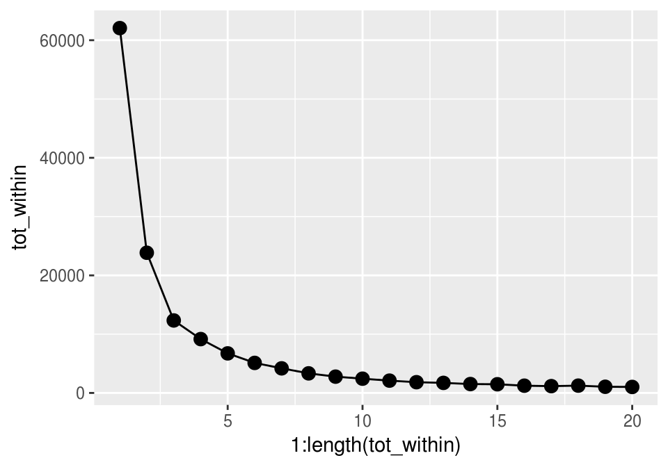
Las soluciones son
grupos_df <- lapply(ajustes_km[1:8], function(aj){
data_frame(num = max(aj$cluster), cluster = aj$cluster,
id= 1:length(aj$cluster))}) %>% bind_rows()
grupo_df_2 <- left_join(grupos_df, quakes_1)## Joining, by = "id"ggplot(grupo_df_2, aes(x=lat, y=long, colour=factor(cluster))) + facet_wrap(~num) +
geom_point()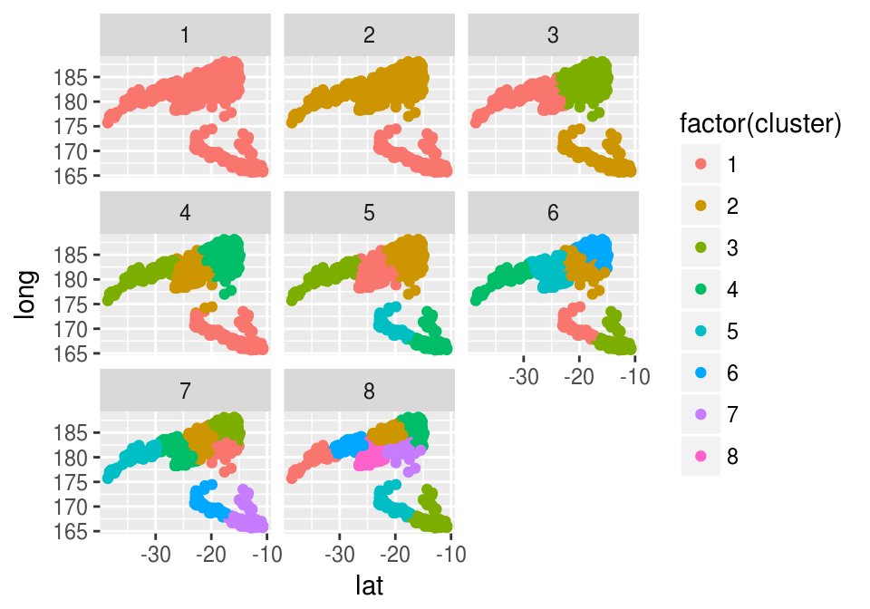
15.4.1 Criterios específicos
Más frecuentemente, la selección de número de grupos se hace tomando en cuenta el uso posterior que se va a hacer de los clusters. Por ejemplo:
En segmentación de clientes/usuarios, casi siempre queremos un grupo no muy grande de grupos (2-10, máximo decenas), pues puede ser difícil diseñar productos o estrategias particulares si tenemos muchos segmentos.Lo mismo sucede en aplicaciones científicas, por ejemplo clasificar objetos como estrellas, galaxias, etc.
Existen algunas aplicaciones de clustering donde buscamos muchos grupos, por ejemplo, para agrupar objetos (noticias, tweets, por ejemplo) en clusters muy compactos (de alta similitud), y así detectar duplicados o relaciones entre fuentes de noticias, usuarios de twitter, etc. Hay más opciones además de algoritmos clásicos como k-means para este tipo de problemas
La estrategia típica es entonces producir varias agrupaciones, y compararlas según sus virtudes para uso posterior.
Ejemplo
Consideremos segmentar personas según sus actitudes hacia las responsabilidades que tiene o no el gobierno en cuanto al bienestar de las personas.
European Social Survey (ESS) data from the 2008 (fourth) round in the United Kingdom. The data are from a questionnaire on “what the responsibilities of governments should or should not be”. gvjbevn Job for everyone, governments’ responsibility (0-10). gvhlthc Health care for the sick, governments’ responsibility (0-10). gvslvol Standard of living for the old, governments’ responsibility (0-10). gvslvue Standard of living for the unemployed, governments’ responsibility (0-10). gvcldcr Child care services for working parents, governments’ responsibility (0-10). gvpdlwk Paid leave from work to care for sick family, governments’ responsibility (0-10). sbprvpv Social benefits/services prevent widespread poverty (1-5). sbeqsoc Social benefits/services lead to a more equal society (1-5). sbcwkfm Social benefits/services make it easier to combine work and family (1-5).
load('datos/ess4_gb.Rdata')
dat <- ess4.gb %>% select(idno, gvjbevn:sbcwkfm)
nombres <- data_frame(var = c("gvjbevn", "gvhlthc", "gvslvol", "gvslvue", "gvcldcr", "gvpdlwk",
"sbprvpv", "sbeqsoc", "sbcwkfm"),
nombre = c('trabajo_a_todos','cuidados_salud_enfermos','garantizar_nivel_mayores','garantizar_nivel_desempleados','ayuda_padres_trabajadores','ausencia_cuidar_enfermos','beneficios_pobreza','beneficios_igualdad','beneficios_fam_trabajo'))
head(dat)## idno gvjbevn gvhlthc gvslvol gvslvue gvcldcr gvpdlwk sbprvpv sbeqsoc
## 1 110701 0 10 8 5 5 4 2 4
## 2 110702 5 10 10 10 5 10 4 4
## 3 110703 8 9 10 0 8 10 4 4
## 4 110704 8 10 10 3 8 6 3 2
## 5 110705 7 10 8 8 9 8 4 2
## 6 110708 0 10 10 5 7 7 2 2
## sbcwkfm
## 1 2
## 2 4
## 3 3
## 4 2
## 5 2
## 6 2En este caso particular tenemos unas variables que están en escala 1-5 y otras 1-10. Esta variabilidad distinta sólo es escala de las respuestas, así que normalizamos dividiendo cada pregunta por su máximo (dividir entre 10 las preguntas en escala de 1 a 10 y entre 5 las de 1 a 5. Podríamos también estandarizar):
dat_2 <- dat %>% gather(var, valor, gvjbevn:sbcwkfm) %>%
left_join(nombres) %>%
select(-var) %>%
group_by(nombre) %>%
mutate(valor_escalado = valor/max(valor, na.rm=T)) %>%
select(-valor) %>%
spread(nombre, valor_escalado)## Joining, by = "var"dat_3 <- filter(dat_2, apply(dat_2, 1, function(x){!any(is.na(x))}))
dat_3## # A tibble: 2,108 x 10
## idno ausencia_cuidar_enfermos ayuda_padres_trabajadores
## <int> <dbl> <dbl>
## 1 110701 0.4 0.5
## 2 110702 1.0 0.5
## 3 110703 1.0 0.8
## 4 110704 0.6 0.8
## 5 110705 0.8 0.9
## 6 110708 0.7 0.7
## 7 110710 0.5 0.3
## 8 110711 0.7 0.5
## 9 110712 0.9 0.3
## 10 110713 0.7 0.8
## # ... with 2,098 more rows, and 7 more variables:
## # beneficios_fam_trabajo <dbl>, beneficios_igualdad <dbl>,
## # beneficios_pobreza <dbl>, cuidados_salud_enfermos <dbl>,
## # garantizar_nivel_desempleados <dbl>, garantizar_nivel_mayores <dbl>,
## # trabajo_a_todos <dbl>ajustes_km <- lapply(1:10, function(k){
kmedias <- kmeans(dat_3[,-1], centers = k, nstart = 20, iter.max=40)
kmedias
})
tot_within <- sapply(ajustes_km, function(aj){ aj$tot.withinss})
qplot(1:length(tot_within), tot_within, geom='line') + geom_point()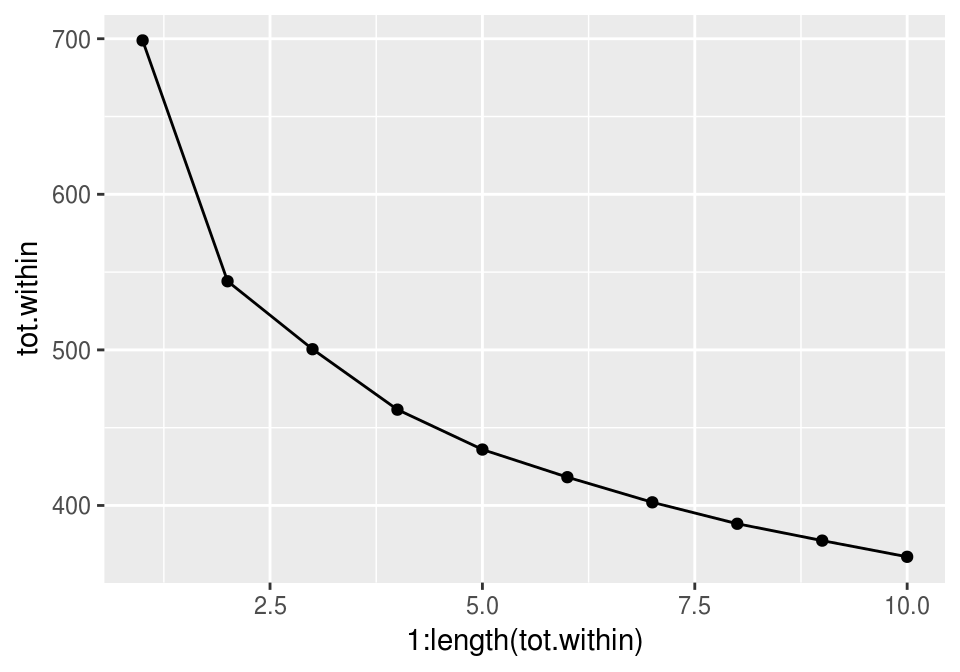
En esta gráfica no vemos un codo claro. Veamos primero la solución de dos grupos:
sol_cl <- ajustes_km[[2]]
table(sol_cl$cluster)##
## 1 2
## 1116 992Ahora veamos cómo resumir grupos para entender qué tipo de casos están en cada uno de ellos. Consideramos las variables originales escaladas:
cluster_df <- data.frame(idno = dat_3$idno, cluster = sol_cl$cluster)
dat_4 <- dat_3 %>%
gather(variable, valor, ausencia_cuidar_enfermos:trabajo_a_todos) %>%
left_join(cluster_df)## Joining, by = "idno"Y resumimos dentro de cada grupo cada una de las variables. Elecciones populares son la media y el error estándar de la media (desviación estándar dividida entre la raíz del número de casos):
resumen_1 <- dat_4 %>% group_by(cluster, variable) %>%
summarise(media = mean(valor), ee = sd(valor)/sqrt(length(valor)))
resumen_1## # A tibble: 18 x 4
## # Groups: cluster [?]
## cluster variable media ee
## <int> <chr> <dbl> <dbl>
## 1 1 ausencia_cuidar_enfermos 0.82 0.0048
## 2 1 ayuda_padres_trabajadores 0.80 0.0048
## 3 1 beneficios_fam_trabajo 0.49 0.0047
## 4 1 beneficios_igualdad 0.55 0.0056
## 5 1 beneficios_pobreza 0.51 0.0053
## 6 1 cuidados_salud_enfermos 0.93 0.0032
## 7 1 garantizar_nivel_desempleados 0.71 0.0057
## 8 1 garantizar_nivel_mayores 0.92 0.0031
## 9 1 trabajo_a_todos 0.74 0.0056
## 10 2 ausencia_cuidar_enfermos 0.60 0.0063
## 11 2 ayuda_padres_trabajadores 0.57 0.0060
## 12 2 beneficios_fam_trabajo 0.53 0.0051
## 13 2 beneficios_igualdad 0.60 0.0057
## 14 2 beneficios_pobreza 0.53 0.0055
## 15 2 cuidados_salud_enfermos 0.82 0.0050
## 16 2 garantizar_nivel_desempleados 0.47 0.0055
## 17 2 garantizar_nivel_mayores 0.79 0.0047
## 18 2 trabajo_a_todos 0.42 0.0067## adicionalmente, invertimos las 3 preguntas en escala de 1 a 5, pues 1 representa mayor acuerdo.
filtro <- resumen_1$variable %in% c('beneficios_fam_trabajo','beneficios_igualdad','beneficios_pobreza')
resumen_1$media[filtro] <- 1-resumen_1$media[filtro]resumen_1$variable <- reorder(resumen_1$variable, resumen_1$media, mean)
ggplot(resumen_1, aes(x=variable, y=media, ymin=media-ee, ymax=media+ee,
colour=factor(cluster), group=cluster)) + geom_point() +
coord_flip() + geom_line() + geom_linerange()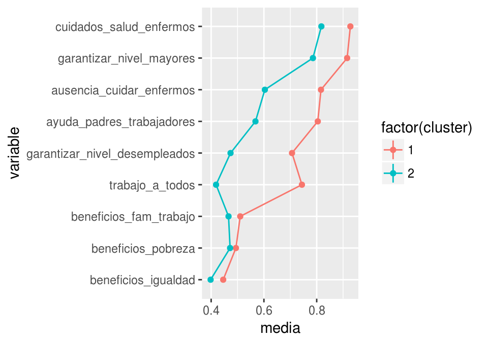
Y notamos dos grupos claros que esperaríamos ver. ¿Cómo la describirías? Esta puede ser una solución aceptable (por ejemplo, si vamos a usar los grupos en otro modelo, como parte de diseños de estrategias de comunicación, etc.)
Intentemos ahora con 5 grupos:
sol_cl <- ajustes_km[[5]]
table(sol_cl$cluster)##
## 1 2 3 4 5
## 450 417 573 306 362Todos los grupos tienen tamaño razonable. No queremos tener grupos muy chicos, pues entonces es difícil caracterizarlos o entenderlos: si hay 15 personas en un grupo, cualquier resumen de este grupo estaría sujeto a variación muestral alta.
Consideramos las variables originales:
cluster_df <- data_frame(idno = dat_3$idno, cluster = sol_cl$cluster)
dat_4 <- dat_3 %>%
gather(variable, valor, ausencia_cuidar_enfermos:trabajo_a_todos) %>%
left_join(cluster_df)## Joining, by = "idno"resumen_5 <- dat_4 %>% group_by(cluster, variable) %>%
summarise(media = mean(valor), ee = sd(valor)/sqrt(length(valor)))
## adicionalmente, invertimos las 3 preguntas en escala de 1 a 5, pues 1 representa mayor acuerdo.
filtro <- resumen_5$variable %in% c('beneficios_fam_trabajo','beneficios_igualdad','beneficios_pobreza')
resumen_5$media[filtro] <- 1-resumen_5$media[filtro]resumen_5$variable <- reorder(resumen_5$variable, resumen_5$media, mean)
ggplot(resumen_5, aes(x=variable, y=media, ymin=media-ee, ymax=media+ee,
colour=factor(cluster), group=cluster)) + geom_point() +
coord_flip() + geom_line() + geom_linerange()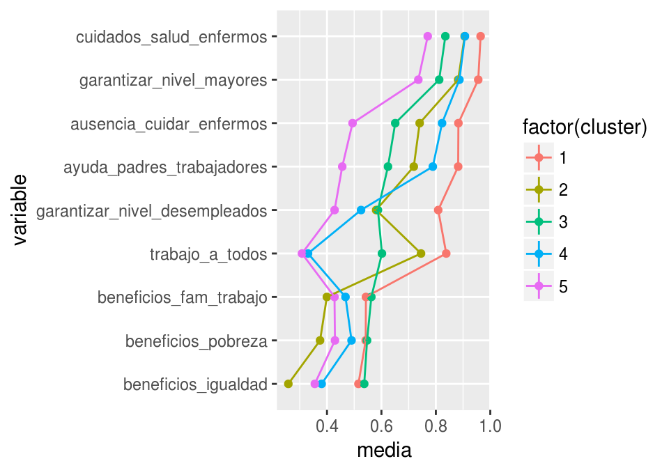
Y en estos casos es especialmente útil perfilar los grupos, es decir, mostrar las diferencias en las medias de cada grupo con respecto a la media general:
resumen_perfil_5 <- resumen_5 %>% group_by(variable) %>%
mutate(perfil = media - mean(media))
ggplot(resumen_perfil_5, aes(x = variable, y = perfil,
colour = factor(cluster), group = cluster)) +
geom_point() + coord_flip() + geom_line() + facet_wrap(~cluster) + geom_hline(yintercept=0, colour='gray')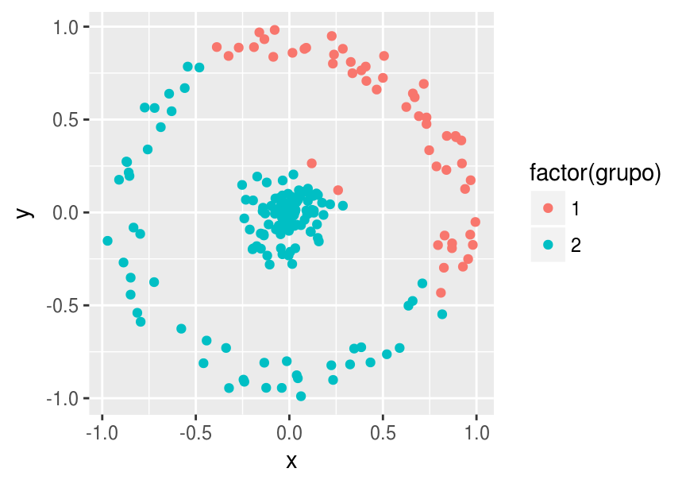
¿Cómo les llamarías a cada uno de estos grupos?
Observación: heterogeneidad en uso de escalas
Los datos en escalas de acuerdo, que son usados frecuentemente en encuestas sociales y de negocios, tienen dificultades adicionales:
Desde el punto de vista estadístico, usamos una medición ordinal como si fuera numérica. Esto sugiere utilizar técnicas de clustering más compicadas adaptadas a datos ordinales. Pero en realidad este es un aspecto menor en el análisis de este tipo de datos.
La dificultad grande en el análisis de este tipo de datos es la heterogeneidad en el uso de la escala. Esto quiere decir que no todas las personas usan escalas 1-10 (o 1-5, o 1-100, o Totalmente de acuerdo-Totalmente en desacuerdo) de la misma manera. Hay algunos que usan todo el rango de la escala, otros que se concentran en la mitad, etc. y muchas veces eso no tienen que ver sólo con el verdadero nivel de acuerdo o desacuerdo de la persona, sino también con cómo usa el lenguaje cada persona.
El verdadero problema es entonces en la medición, no que tratemos como numérica a una variable que no lo es. Los datos de una persona no son realmente directamente comparables con los de otra persona. Hay maneras de lidiar con esto: por ejemplo, centrar los niveles de respuesta de cada persona, usar modelos que intentan medir la heterogeneidad de uso en la escala y separar de niveles de acuerdo, pero lo mejor en estos casos siempre es (si es posible) mejorar la medición.
15.5 Dificultades en segmentación/clustering.
Aunque la idea conceptual de clustering es más o menos clara, en la práctica es una tarea difícil. Vamos a empezar apuntando dificultades que se comunmente se encuentran:
- La estructura de grupos naturales que buscamos no es necesariamente de clusters compactos.
- No existen grupos naturales
- En dimensiones altas (digamos > 30) muchas veces todos los puntos están a distancias similares entre ellos, especialmente cuando hay variables que aportan la separación entre grupos.
- Dificultades en la selección de medida de distancia (o disimilitud).
15.5.1 Estructuras no compactas
En algunos casos se dice que k-medias no tiene supuestos, otros dicen que tienen supuestos de clusters esféricos, etc.
k-medias es un algoritmo, no es un modelo. Así que en realidad no tiene supuestos en el sentido típico. Lo importante es entender la cantidad que estamos minimizando. Si lo que realmente queremos hacer es minimizar esta cantidad, entonces k-medias nos devuelve una solución razonable.
Pero hay veces que no queremos minimizar esta cantidad. Un ejemplo clásico es el siguiente
theta <- runif(200,0,2*pi)
r <- c(runif(100,0,0.3), runif(100,0.8,1))
df <- data.frame(x=r*cos(theta), y=r*sin(theta))
df$grupo <- kmeans(df, centers=2, nstart=20)$cluster
ggplot(df, aes(x=x, y=y, colour=factor(grupo))) + geom_point()
¿Por qué falla k-medias? Porque la estructura de grupos que estábamos buscando no es una donde los clusters están definidos por distancia baja a su centro. Aquí realmente queremos otra cosa más complicada, como clusters definidos por cantidades invariantes (en este caso, distancia al origen)
Sin embargo, si lo que nos interesa es distancia baja a un centroide, entonces está solución es razonable para k=2
theta <- runif(200,0,2*pi)
r <- c(runif(100,0,0.3), runif(100,0.8,1))
df <- data.frame(x=r*cos(theta), y=r*sin(theta))
df$grupo <- kmeans(df, centers=5, nstart=20)$cluster
ggplot(df, aes(x=x, y=y, colour=factor(grupo))) + geom_point()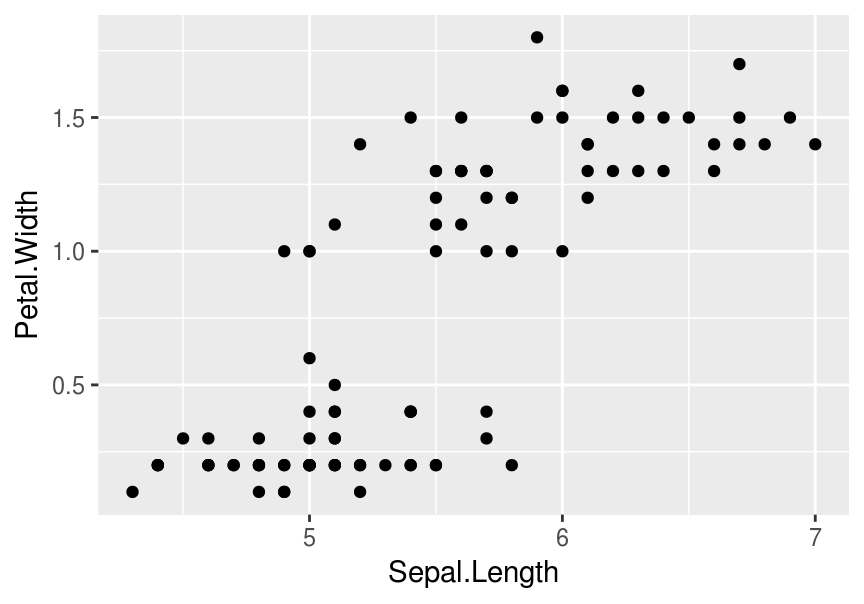
Como ejemplo, pensemos que el espacio es un espacio de “gustos por películas”. Aún cuando podría ser muy interesante descubrir esta estructura concéntrica, el grupo exterior contiene personas con gustos diametralmente opuestos! El problema de hacer dos clusters, uno central y otro concéntrico puede ser un poco artificial.
15.5.2 Existencia o no de grupos “naturales”
Otro punto que se discute usualmente es si hay o no grupos naturales, que se refiere a grupos bien compactos y diferenciados entre sí, como en el ejemplo inicial
ggplot(filter(iris, Species %in% c('setosa','versicolor')), aes(x=Sepal.Length, y=Petal.Width)) + geom_point()
Pero es común, por ejemplo, encontrar cosas como siguen:
set.seed(90902)
df <- data.frame(x = rnorm(500,0,1), y = rnorm(500,0,1))
df$grupo <- kmeans(df, centers=5, nstart=20)$cluster
ggplot(df, aes(x=x, y=y, colour=factor(grupo))) + geom_point()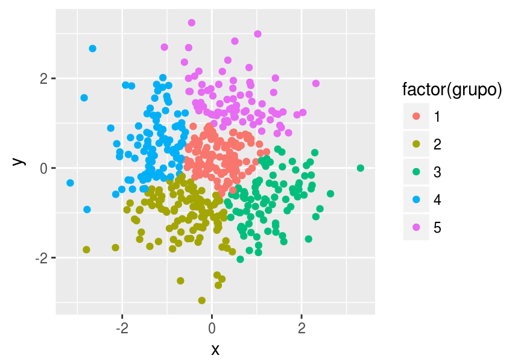
Nótese que k-means logró encontrar una buena solución, y esta solución puede ser muy útil para nuestros fines (agrupa puntos “similares”). Sin embargo, en esta situación debemos reconocer que los tamaños, las posiciones, y el número de grupos es fundamentalmente arbitrario, y una “buena” solución depende de nuestros fines.
Si corremos otra vez el algoritmo, vemos que los grupos encontrados son similares:
df$grupo <- kmeans(df, centers=5, nstart=20)$cluster
ggplot(df, aes(x=x, y=y, colour=factor(grupo))) + geom_point()
Sin embargo, si tomamos otra muestra distinta
set.seed(909021)
df <- data.frame(x = rnorm(500,0,1), y = rnorm(500,0,1))
df$grupo <- kmeans(df, centers=5, nstart=20)$cluster
ggplot(df, aes(x=x, y=y, colour=factor(grupo))) + geom_point()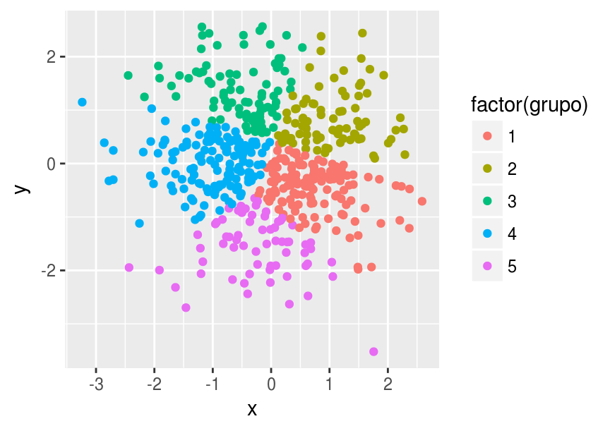
La solución es bastante diferente. Esta diferencia no se debe al comienzo aleatorio del algoritmo. Se debe más bien a que los grupos se están definiendo por variación muestral, y pequeñas diferencias en las muestras.
**En esta situación, debemos entender lo arbitrario de la solución, y considerar si una solución así es útil para nuestros fines. Esto no le quita necesariamente utilidad a la segmentación resultante, pero hay que recordar que los grupos que encontramos son en ciertos aspectos arbitrarios.
Ejemplo
También en esta situación puede ser que el criterio para segmentar no es uno apropiado para un algoritmo de segmentación. Por ejemplo, supongamos que un fabricante de zapatos nos pide segmentar a sus clientes en términos de su estatura y su tamaño de pie. Observamos:
set.seed(909021)
x <- rnorm(200, 160, 15 )
df <- data.frame(estatura=x, pie= 6 + 2*(x-160)/30 + rnorm(200,0,0.5))
ggplot(df, aes(x=estatura, y=pie)) + geom_point()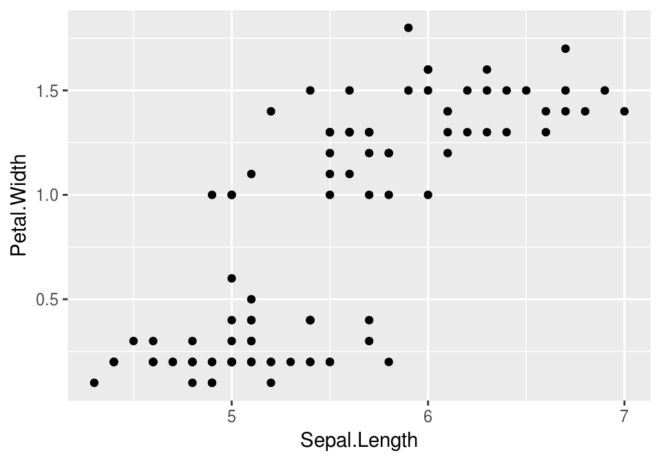
¿Dónde cortamos los grupos? Aunque cualquier algoritmo no supervisado nos va a dar una respuesta, muy posiblemente sería buena idea encontrar puntos de cortes definidos de otra manera (por ejemplo algo tan simple como cuantiles!). Algo similar ocurre en la segmentación por actitudes/ideología: no hay “buenos” y “malos” o “saludables” y “descuidados”, sino continuos a lo largo de estas actitudes.
Grupos en dimensión alta
En dimensión más alta (50 variables, 10 casos) observamos cosas como la siguiente:
mat_1 <- rbind(matrix(rnorm(10*50), ncol=50))
mat_1[1:10,1] <- mat_1[1:10,1] + 10
dist(mat_1, method = 'euclidean')## 1 2 3 4 5 6 7 8 9
## 2 9.9
## 3 9.3 9.2
## 4 9.9 10.0 9.4
## 5 9.3 10.6 10.8 9.1
## 6 10.7 11.7 10.5 9.9 10.4
## 7 8.2 11.8 10.1 11.2 11.1 12.4
## 8 9.6 10.0 10.0 9.8 9.6 10.0 11.3
## 9 9.9 9.5 9.3 9.9 9.4 10.6 11.1 9.4
## 10 8.2 10.1 9.9 9.9 10.0 9.9 10.3 10.8 9.4donde todos los puntos están a más o menos la misma distancia, aún cuando existe una estructura de grupos natural.
En dimensión baja, la situación se ve muy diferente:
mat_1 <- rbind(matrix(rnorm(10*2), ncol=2))
mat_1[1:5,1] <- mat_1[1:5,1] + 10
dist(mat_1, method = 'euclidean')## 1 2 3 4 5 6 7 8 9
## 2 1.43
## 3 2.42 3.76
## 4 1.05 1.66 2.31
## 5 2.19 1.36 4.59 2.86
## 6 9.00 9.12 10.28 10.04 7.88
## 7 11.85 11.95 13.06 12.89 10.69 2.85
## 8 8.23 8.26 9.63 9.26 6.99 0.95 3.69
## 9 10.72 10.72 12.09 11.75 9.44 1.83 1.38 2.50
## 10 10.86 10.65 12.49 11.85 9.30 2.82 2.70 3.00 1.63ggplot(data.frame(mat_1), aes(x=X1, y=X2)) + geom_point()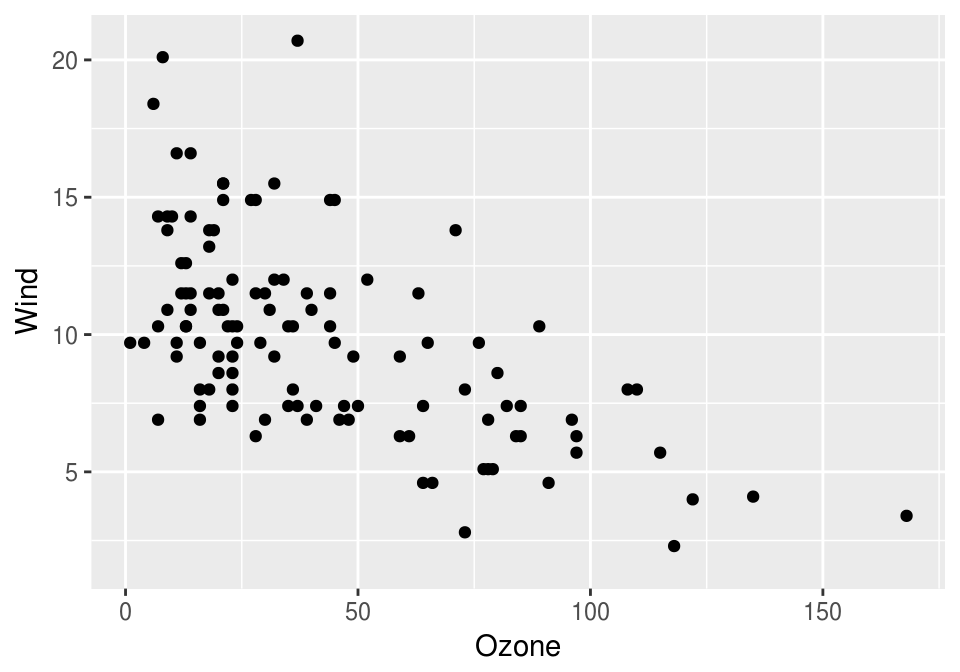
Y cualquier técnica razonable que usemos lograría encontrar estos grupos.
- Muchas veces pueden encontrarse mejores soluciones aplicando alguna técnica de reducción de dimensionalidad antes de hacer clustering.
Dificultades en la selección de métrica
Muchas veces no hay una métrica natural para el problema. En este caso, muchas veces escogemos distancia euclideana (con variables estandarizadas o no, dependiendo de sus escalas).
La inclusión de variables categóricas plantea distintas alternativas que dan resultados distintos.
En dimensión alta, incluso con variables numéricas, no siempre es claro que peso debería tener cada variable.
Los métodos básicos de clustering generalmente producen una solución bien definida en problemas dimensión baja con clusters razonablemente bien definidos, donde hay una métrica de distancia natural. En otros casos, como:
- Dimensión alta con muchas variables ruidosas o que no aportan en la definición de los clusters.
- Estructuras relativamente dispersas que quisiéramos agrupar
- Clusters no bien definidos.
- Dificultad en escoger una métrica única apropiada para el problema,
Bishop, Christopher M. 2006. Pattern Recognition and Machine Learning (Information Science and Statistics). Secaucus, NJ, USA: Springer-Verlag New York, Inc.
Goodfellow, Ian, Yoshua Bengio, and Aaron Courville. 2016. Deep Learning. MIT Press.
Hastie, Trevor, Robert Tibshirani, and Jerome Friedman. 2017. The Elements of Statistical Learning. Springer Series in Statistics. Springer New York Inc. http://web.stanford.edu/~hastie/ElemStatLearn/.
James, Gareth, Daniela Witten, Trevor Hastie, and Robert Tibshirani. 2014. An Introduction to Statistical Learning: With Applications in R. Springer Publishing Company, Incorporated. http://www-bcf.usc.edu/~gareth/ISL/.
Ng, Andrew. 2017. “Machine Learning.” https://www.coursera.org/learn/machine-learning.
Srivastava, Nitish, Geoffrey Hinton, Alex Krizhevsky, Ilya Sutskever, and Ruslan Salakhutdinov. 2014. “Dropout: A Simple Way to Prevent Neural Networks from Overfitting.” J. Mach. Learn. Res. 15 (1). JMLR.org: 1929–58. http://dl.acm.org/citation.cfm?id=2627435.2670313.